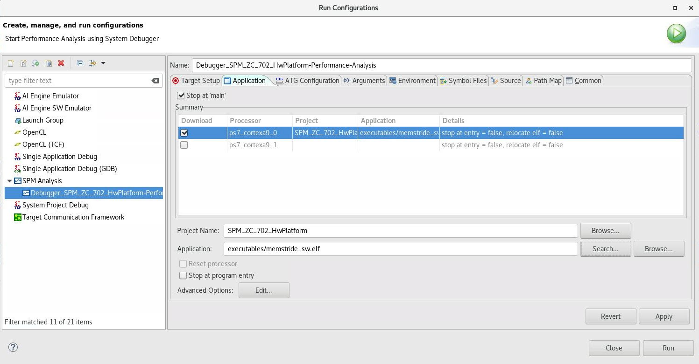
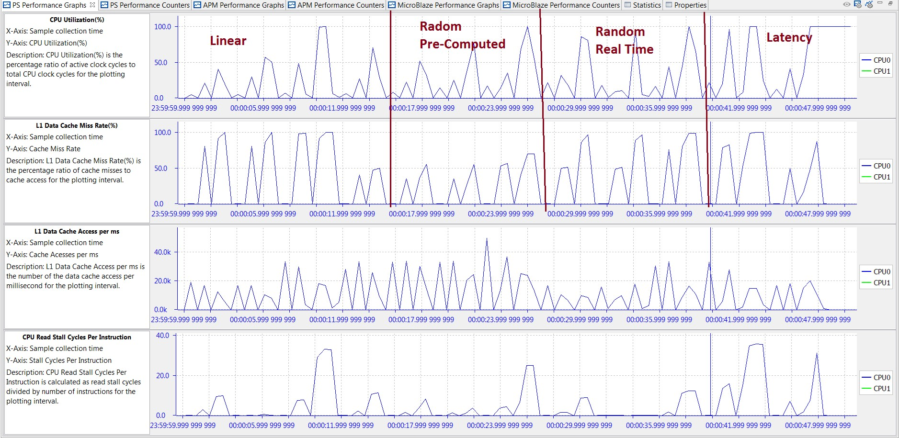
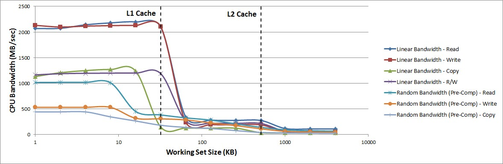
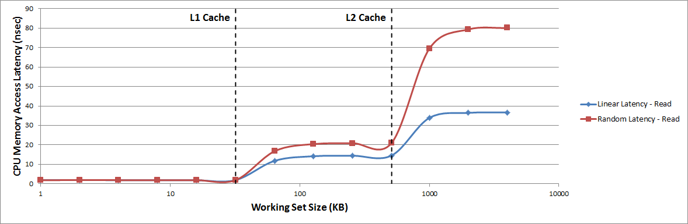

Evaluating Memory Hierarchy and the ACP¶
The System Performance Modeling (SPM) design can be used to evaluate the performance effects of the Zynq®-7000 SoC cache. You can assess baseline performance using software only, and then you can evaluate the effects of traffic on the Accelerator Coherency Port (ACP). While running software only can produce fairly predictable memory performance, introducing other traffic activity into the system may lead to less intuitive results. Specifically, CPU and ACP traffic have the potential to impact each other at the shared L2 cache. The SPM design allows you to do this analysis very easily.
Assess Memory Performance¶
To begin the evaluation, the SPM design can be used to assess a baseline performance using software only. An application to use for this evaluation is the memory stride benchmarks program, one of the pre-compiled executables that comes with the SPM project.
The following figure shows how this was defined in the Vitis™ IDE using the memory stride software executable (see SPM Software). This software was instrumented to calculate bandwidth and average latency (see Instrumenting Software).
Figure 33: Application Setup using Memory Stride Software

Table 7: Software-Only Bandwidth Results for Memory Stride Benchmarks (in MB/sec)
| Pattern Type | Operation Type | Working Set Size | ||
|---|---|---|---|---|
| 4 KB | 64 KB | 1024 KB | ||
|
Linear |
Read |
2141.4 |
338.4 |
118.1 |
|
Write |
2114.8 |
238.4 |
57.6 |
|
|
Copy |
1248.4 |
126.7 |
32.9 |
|
|
Read/Write |
1194.4 |
265.2 |
64.4 |
|
|
Random (Pre- Computed) |
Read |
1019.9 |
325.9 |
92.4 |
|
Write |
532.4 |
285.6 |
64.1 |
|
|
Copy |
442.6 |
140.6 |
31.9 |
|
| Random (Real-Time) | Read |
337.2 |
138.7 |
41.5 |
| Write |
409.8 |
393.6 |
70.0 |
|
| Copy |
409.7 |
159.4 |
32.8 |
|
Table 8: Software-Only Latency Results for Memory Stride Benchmarks (in nsec)
| Pattern Type | Operation Type | Working Set Size | ||
|---|---|---|---|---|
| 4 KB | 64 KB | 1024 KB | ||
| Linear | Read |
1.87 |
11.82 |
33.88 |
| Random (Pre- Computed) | Read |
1.89 |
16.78 |
69.46 |
Using no traffic in the Programmable Logic (PL), bandwidth results (in MB/sec) for the software- only tests are listed in Table 7: Software-Only Bandwidth Results for Memory Stride Benchmarks (in MB/sec), while latency results (in nsec) are shown in Table 8: Software-Only Latency Results for Memory Stride Benchmarks (in nsec). Three different working set sizes were used to specifically test the bandwidth of different stages of the memory hierarchy: 4 KB, 64 KB, and 1024 KB. These are the three sizes used by the pre-compiled memory stride executable in the SPM project. The locality of these data arrays is known based on their size and the fact that there is little else in the heap used by the program.
Within a working set size, the highest bandwidths are achieved by the linear bandwidth tests as they can take advantage of the 32-byte cache lines. Operations such as copy and read/write are generally slower because they involve a mix of read and write operations. Among the three different set sizes, the 4 KB array sustains the highest bandwidth while the 1024 KB array sustains the lowest bandwidth.
There are 36 total tests performed, as the 12 benchmarks listed in Table 7: Software-Only Bandwidth Results for Memory Stride Benchmarks (in MB/sec) and Table 8: Software-Only Latency Results for Memory Stride Benchmarks (in nsec) are each run on the three different data array sizes. Since a sleep time of one second was inserted between each test, the CPU utilization gives a clear view of when these benchmarks were run. The following figure helps orient the timeline for the results. The three data sizes were run from smallest to largest within each benchmark, which can be seen in the value and length of the utilization of CPU0.
Figure 34: PS Performance Graphs for Memory Stride Benchmarks

The previous figure also shows three other graphs reported in the PS Performance panel, including: L1 Data Cache Miss Rate, and CPU Write/Read Stall Cycles Per Instruction. While the periodic nature of the memory stride benchmarks is reflected in these graphs, these three graphs can also provide information as to where the data is being retrieved. Every third benchmark has a L1 data cache miss rate of 0% - that was when the 4 KB working set size was used. The other two set sizes do not fit in the L1 data cache and, therefore, have at or near 100% miss rates.
The software impact of these cache misses can be seen in the Stall Cycles Per Instruction. A higher number of stall cycles means the processor is spending more cycles waiting for either a memory write (write) or a data cache refill (read). This would, in turn, lower the effective bandwidth of that benchmark. An example is the Linear Bandwidth – Copy benchmark which was performed between approximately 10-11s. The high number of CPU write/read stall cycles per instruction during this time shows why it sustains one of the lowest bandwidths of all memory stride benchmarks (33.23 MB/s; see Table 7: Software-Only Bandwidth Results for Memory Stride Benchmarks (in MB/sec).
Data Size and Locality¶
To better visualize the performance of the memory hierarchy, the working set size used in the memory stride tests was swept across a range of values between 1 KB and 4096 KB. This enables a clear view of how data size and locality can affect the bandwidth and latency achieved by the CPU.
Figure 35: CPU Memory Bandwidth Achieved During Memory Stride Tests

The previous figure shows the memory bandwidth achieved by CPU0 during the memory stride tests. For clarity, the random bandwidth (real-time) tests are not shown in the graph. As the working set size increases, there are noticeable transitions at the L1 and L2 data cache boundaries as the working set size no longer fits into the previous cache. The following figure shows similar transition points for the average memory access latency achieved by CPU0 during the memory stride tests. However, while the bandwidth decreases with an increasing working set size, the latency noticeably increases.
Figure 36: CPU Memory Access Latency Achieved During Memory Stride Tests
